Knowledge View Definitions
A Knowledge View definition identifies what type of Content List objects will be returned, and how a user will navigate through them. The sample Knowledge View definitions that are created during installation are stored in a folder named [Knowledge Views], which is located in the Partition root folder. Knowledge View definitions can be stored anywhere in the Content List, under any folder structure.
To create a new Knowledge View, navigate to the folder into which you wish the Knowledge View to be created, then select the Create New dropdown and choose the Knowledge View menu entry.
To configure or view the properties of an existing Knowledge View, find the object in the Content List, then click on its name, or click the check box next to the name and select the Properties hotlink.
Each Knowledge View definition contains several configurable tabs.
Properties Tab #
The Properties tab defines the basic properties of the Knowledge View, and the objects you wish to associate with it.
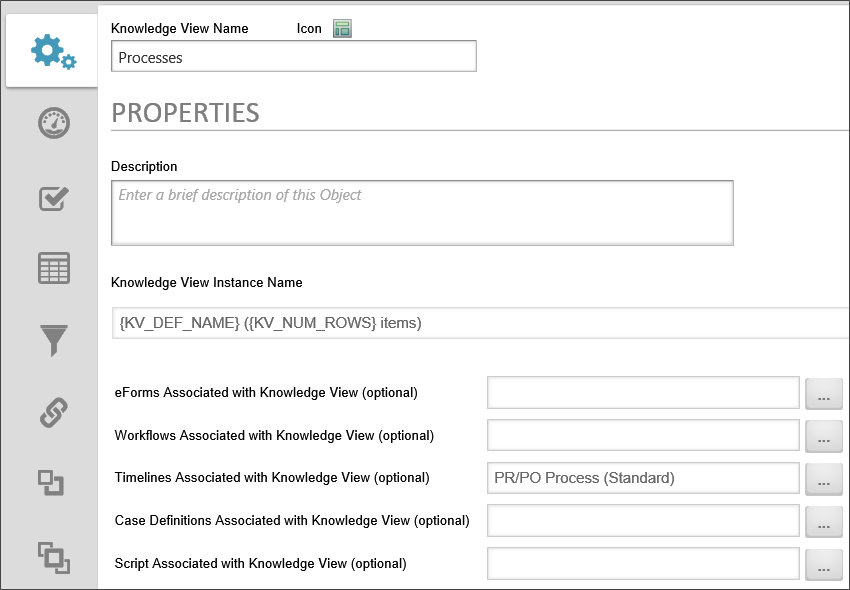
Knowledge View Name and Description
The Knowledge View name and description are important because this is what a user will see when selecting a Knowledge View to run. A custom icon can also be configured for this Knowledge View definition. To change the icon used for this Knowledge View definition, click on the icon.
Knowledge View Instance Name
This option enables you to specify a name for the Knowledge View instance when the Knowledge View runs.
Forms Associated with Knowledge View
You can optionally link a Knowledge View to a specific Form definition in the Content List. When this is configured:
- The Knowledge View will return only return objects or instances of the selected Form definition, and
- The selected Form will become the default Form for any Form-related filter selections. For instance, if you want to create a filter on a form field, only form fields from the selected Form will be available for selection. This is convenient if you have only one Form that needs to be associated with the KView.
Workflows Associated with Knowledge View
You can optionally link a Knowledge View to a specific Workflow definition in the Content List. When this is configured:
- The Knowledge View will return only return objects or instances of the selected Workflow definition, and
- The selected Workflow will become the default Workflow for any Workflow-related filter selections.
Timelines Associated with Knowledge View
You can optionally link a Knowledge View to a specific Process Timeline definition in the Content List. When this is configured:
- The Knowledge View will return only return objects or instances of the selected Process Timeline definition, and
- The selected Process Timeline will become the default Process Timeline for any Process Timeline-related filter selections.
Case Definitions Associated with Knowledge View
You can optionally link a Knowledge View to a specific Case definition in the Content List.
Script Associated with Knowledge View
You can optionally link a Knowledge View to a custom script in the Content List.
Select Excel Template (.xls, .xlsx, .xlsm)
When a Knowledge View is configured to export to Excel on the ConfigureTab, this option will appear. You must use the Object Picker to specify an Excel file that exists in the Content List to use as the Excel template that will be used for the Export. Please see the Knowledge View Exporting/Reporting topic for details on exporting to Excel.
Select Destination Folder for CSV/XLS (optional)
When a Knowledge View is exported to a CSV or Excel file, you can use the Object Picker to specify a Content List destination folder for the exported file. This setting is the equivalent to the contentfolderpath URL parameter for Knowledge View URLs. Please see the Knowledge View Exporting/Reporting topic for details on exporting to CSV.
Select Database Data Source
When a Knowledge View is exported to a database table, you can use the Object Picker to select the Datasource for the database into which you desire to export the Knowledge View results as a table. This option is only available in Process Director v5.21 and higher.
Configure Tab #
Additional configuration options are available in the Configure tab.
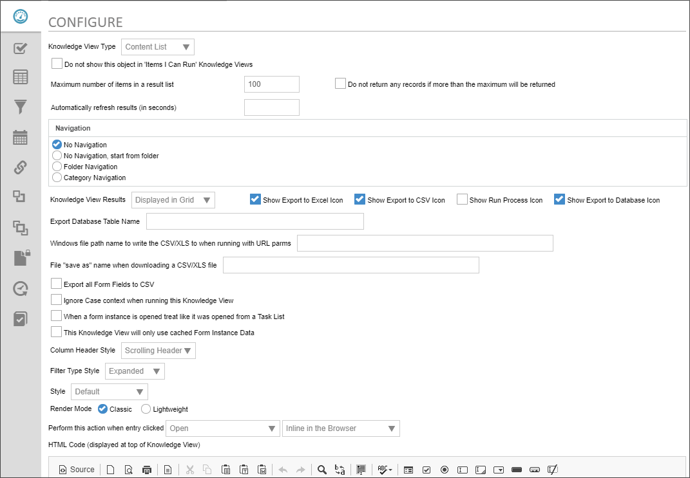
Knowledge View Type
This defines the type of Knowledge View you want to display. When a type is selected, different options will display allowing you to configure your Knowledge View for the selected type.
 Changing this value will change the options available in the Perform this action when entry clicked property. Be sure to check the property to be sure it is correct after changing the Knowledge View Type property.
Changing this value will change the options available in the Perform this action when entry clicked property. Be sure to check the property to be sure it is correct after changing the Knowledge View Type property.
The following options are available:
- Content List: This is the default selection, and can return all Content List objects available in the system.
- Task List: This selection will return only user task items, and will open the items in task context.
- Items I can Run: This selection returns only Content List objects that the user has Run permission to execute, and will return a subset of the Items I can Run Global Knowledge View.
Do not show this object in ‘Items I Can Run’ Knowledge Views
For a Knowledge View definition to not appear in the Items I can Run Global Knowledge View, you must uncheck the Do not show this object in 'Items I Can Run' Knowledge Views checkbox.
Maximum number of items displayed in a result list
This controls the maximum number of items returned. If a larger number of items that match the filter criteria are returned, a message will be displayed to the user indicating that more records exist but were not displayed because of this configuration setting.
When exporting data and using the results in a Report, ensure this value is large enough to accommodate all of the possible items that will be returned, otherwise, some data will be missing.
An associated option is the checkbox labeled Do not return any records if more than the maximum will be returned. When this option is selected, Process Director will check to see if greater than the max number of results would be returned. If so, users will see a message informing them that the number of records returned is too large, and won't return any results. Using this option is advised and can result in improved overall system performance.
 For process Director v4.04 and above, filter conditions will take precedence over this value for Task Lists. A Task List that contains both filter data and limits the number of the rows returned will correctly return all Task List entries that match the filter. Previously, it could return a smaller number of tasks than the limit defined in the Knowledge View filters, when the Maximum number of items was set to display a smaller number of records than the filter would return.
For process Director v4.04 and above, filter conditions will take precedence over this value for Task Lists. A Task List that contains both filter data and limits the number of the rows returned will correctly return all Task List entries that match the filter. Previously, it could return a smaller number of tasks than the limit defined in the Knowledge View filters, when the Maximum number of items was set to display a smaller number of records than the filter would return.
Automatically refresh results (in seconds)
This option will automatically refresh the Knowledge View after the configured number of seconds. This option is useful for Knowledge Views that display data that changes in near real-time.
Navigation Section
The Navigation section determines what type of a navigation tree should be presented to the end users. The navigation tree is optional. It is displayed as a vertical tree structure on the left side of the Knowledge View window. If a navigation tree is desired, it can be based on the folder structure in the Content List or it can be derived from your Meta Data schema's hierarchy.
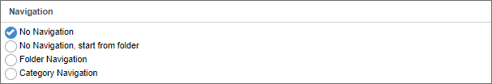
Folder navigation from “folder”
This indicates that a navigation window will appear in the left side of the running Knowledge View. The navigation tree that is displayed will be based on the folder structure in the Content List, and the folder structure will start from, and only include subfolders for, the folder you specify in this setting.
Category navigation from “category”
This indicates that a navigation window will appear in the left side of the running Knowledge View. The navigation tree that is displayed will be based on the category tree hierarchy defined in the Meta Data taxonomy, and the category structure will start from, and only include subcategories for, the Category you specify in this setting.
Folder navigation
This indicates that a navigation window will appear in the left side of the running Knowledge View. The navigation tree that is displayed will be based on the folder structure in the Content List. When a user selects an item in the folder navigation, it will use that as filter criteria and only display items that are located in that folder and meet the defined filter criteria. The Content List, by the way, is nothing more than a Knowledge View that uses Folder Navigation.
Category navigation
This indicates that a navigation window will appear in the left side of the running Knowledge View. The navigation tree that is displayed will be based on the category tree hierarchy defined in the Meta Data taxonomy. When a user selects a category in the navigation window, it will use that category as filter criteria and only display items that are assigned that category and meet the defined filter criteria.
Knowledge View Results
This controls where the results will display. The following options are available:
|
Displayed In Grid
|
Displays the results in a standard grid view.
|
|
Exported to Excel
|
Automatically exports the results to an Excel file. Selecting this option will add the Select Excel Template (.xls, .xlsx, .xlsm) (optional) object picker to the list of associated objects for this Knowledge View on the Properties tab. You must use this object picker to select the Excel Template to use for the export from the Content List.
|
|
Exported to CSV
|
Automatically exports the results to a CSV file.
|
|
Run a Process
|
Automatically runs a process for each row in the results. Selecting this option will add the Select process to run on each object (optional) object picker to the list of associated objects for this Knowledge View at the top of the Properties tab. You must use this object picker to select the process you wish to run on each row of the Knowledge View.
When starting a process from a Knowledge View against returned form instances, the system will copy all attachment references from the original process associated with the form instance to the process instance that is being started by the Knowledge View. This behavior can be disabled using the fCopyRefsFromRealProcessToKViewProcess Custom Variable.
For Process Director v4.04 and higher, you can select either a Workflow or Process Timeline to run on each row. Earlier versions of Process Director only allow you to run a Workflow on each row of the Knowledge View.
|
| Calendar |
Date-based Knowledge View results can be displayed in a Calendar interface. This is useful for viewing the duration of a Process Timeline, Timeline Activity, etc, by using the start and end dates of the result to fill out the calendar view. You must configure the Calendar Tab to display the calendar properly. to For more information, see the information below in the Calendar Tab section. |
| Export to Database |
Automatically exports the results to a database table. Selecting this option will add the Select Database Data Source object picker to the list of associated objects for this Knowledge View on the Properties tab. You must use this object picker to select the Datasource object to use to export the data to a database. The option is available for Process Director v5.21 and higher. |
You can also optionally display button icons to export the Knowledge View results to Excel or CSV, and/or run a process based on the Knowledge View results. Process Director v5.21 and higher includes an option to show a database export icon.
Export Database Table Name
When the Show Export to Database Icon option is selected, this option enables you to name the table that will be created to store the Knowledge View Results. When the Knowledge View runs, it will perform a DROP operation for any existing table with the same name, then perform a CREATE operation to create the table with the current data. The table name can accept system variables. You must also select a Datasource object, using the Select Database Data Source object picker on the Properties tab of the Knowledge View Definition, to specify the database into which the table will be created.
URL to Call When Complete
When a Knowledge View's Knowledge View Result property is set to export the data to a different format, or to run a process, this property will appear. This property specifies a URL to call if
- The Knowledge View is run asynchronously, and
- The result is successful.
Once the processing is complete, the URL specified in this property will be called. Setting this property can be used to serialize multiple Knowledge Views. So, for example, KView1 can call the URL for KView2, which will in turn, call the URL for KView3, thus running all three Knowledge Views in serial.
When using this property for a Knowledge View that exports to CSV or Excel files, you must specify the dorun=1 URL parameter as part of the URL that is called.
This property can also be used to enter the URL of a process to start when the Knowledge View Completes.
Windows file path name to write the CSV/XLS to when running with URL parms
Enables you to specify a Windows file path for the exported Excel/CSV file. This is generally for running the Knowledge View via URL with URL parameters as described in the Knowledge View Exporting and Reporting topic.
File "save as" name when downloading a CSV/XLS file
Enables you to specify a file name when exporting an Excel/CSV file.
Export file name for CSV/XLS
This option will specify the file name of a Knowledge View exported to the Content List, and must be used in conjunction with the Select Destination Folder for CSV/XLS option on the Properties tab.
Export all Form Fields to CSV
This option will export all form fields for Forms returned in the results to a CSV file. This option appears only if the Export to CSV option is selected.
Ignore Case context when running this Knowledge View
If the Knowledge View returns Case objects, the Knowledge View will ignore case mode when displaying the results. Normally a Knowledge View always filters results by case when it is run with case context. This option will direct the Knowledge View to ignore case context
This option shouldn't be set unless there is a specific reason to do so.
When form instance is opened treat like it was opened from a Task List
By default, Knowledge Views do not open forms in task context, so, even if the user has a task assigned for that form, no task completion buttons will be displayed, and the user will be unable to complete the task by opening the form from a Knowledge View.
When this option is selected, opening a Form instance from the Knowledge View will open it in task context. If you have a task active for the Form, you can complete the task by using the task completion buttons on the form.
This Knowledge View will only use cached Form Instance Data
This option is only available when a Knowledge View returns data from a form that has Form Data Caching enabled. When this box is checked, the Knowledge View will display only the form data that is stored in the Form cache. As a result, the Knowledge View may run significantly faster, but may not contain the most current data. For more information, please see the Form Data Caching topic.
Column Header Style
This option gives you the choice between selecting a fixed header that won't scroll when you scroll down the page, or a scrolling header.
Filter Type Style
This option enables you to choose whether to allow users to expand or collapse the Filters for the Knowledge View, and determine the initial view state of the filter section, i.e., expanded or collapsed.
Style
The dropdown for this property contains a list of preset visual styles that can be applied to the Knowledge View results. Selecting a style from this dropdown will replace the default color scheme with the selected style.
Use Process Director 6.0 style
For Process Director v6.0 and higher, this property enables/disables the display of the v6.0 UI for the Knowledge View results.
Render Mode
There are two options for this property: Classic and Lightweight.
Classic rendering is the long-standing rendering mode of the Knowledge View, with extensive use of table elements for the layout and images for backgrounds, icons, etc.
Lightweight rendering leverages HTML5 and CSS3, which may be more appropriate for mobile devices, but the control may lose its rounded corners, gradients and shadows in non-modern browsers.
Perform this action when entry clicked
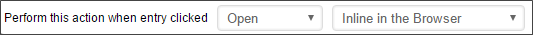
This property enables you to specify what action is taken when an entry is clicked in the result set. Depending on the option you select, additional options will appear in the user interface.
Available Options
- Open: The item will be opened in the browser. For instance, if the Knowledge View returns Form Instances, clicking on the item when this option is selected will open the Form.
- Properties: The item's properties will be displayed in the browser.
- Download: The item will be downloaded to the user's computer.
- Run: The item will run.
- Attach Link: Usually used in conjunction with an AttachKView control on a Form, this option will attach the Knowledge View to the Form.
- Case Folder View and Open: Enters case mode and open the item.
- Case Folder View Only: Enter case mode for the item's case.
Additional Options
If you select the Open, Properties, Run, or Case Folder View and Open options from the Available Options above, an additional dropdown will appear that enables you to select how you want the item displayed to the user.
- Inline In the Browser: Opens the item directly in the browser. This is the default choice, and is generally the best option. (NOTE: Forms will always open in a new browser window.)
- In a Popup Window: A new popup window will appear that contains the selected item.
- and replace entire Window: The entire current window will be replaced by the selected item.
- and replace entire Portlet: If the Knowledge View appears in a Workspace portlet, the selected item will replace the Knowledge View inside the portlet.
- and display in target Portlet: If the Knowledge View appears in a Workspace portlet, the selected item will appear in the selected target portlet. When this option is selected, an additional dropdown, labeled in workspace portlet #, will appear, and you can select the desired Portlet number in which to display the item from this dropdown control.
HTML Code
This option enables you to enter arbitrary HTML text that will appear at the very top of the Knowledge View when it is displayed to users. For users of v5.23 and higher, this field will use the same text editor as the Online Form Designer to make formatting the text easier without having to know the actual HTML code to apply formatting.
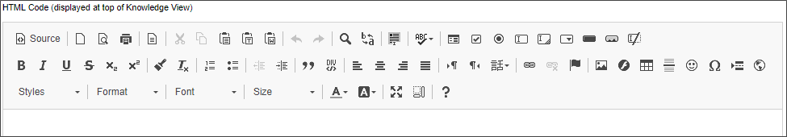
Options Tab #
The Options tab defines the object types the Knowledge View will return, and determines which user interface controls or icons will be available to the user. Providing these controls will give the end user additional actions to enhance reporting and provide more control of objects in Process Director. These controls are used throughout the system (e.g. Task List, Content List, etc.).
The options available on this tab are dependent upon the Knowledge View Type you select on the Configure tab.
Content List Knowledge View Options

The Content List Knowledge View type can return all Content List items. This type requires the user to have Read permissions on the objects that are returned. Most Knowledge Views will be of this type.
Content List Knowledge Views have the following options.

For users of Process Director v5.08 and higher, new functionality enables Knowledge Views that return documents to also return the form context for the form used to upload the document. With this context, the Knowledge View can return Form field data from the in-context forms.
Allow These Actions on Objects
This option will allow users to run actions on a result item if checked. In cases where the Knowledge View will be displayed to end users, these options should all be unchecked.

Return These Objects Types
This setting determines the types of objects that will be returned by the Knowledge View. In most cases, Knowledge Views that will be displayed to end users will only be configured to return Form Instances, with all other objects unchecked.

Display Action Icons for
This option allows you to display Action icons for each result displayed. In cases where the Knowledge View will be displayed to end users, these options should all be unchecked.

Users Will Have Permission to Create
This enables users with the appropriate permission the ability to create new objects in the Content List. In cases where the Knowledge View will be displayed to end users, these options should all be unchecked.

Task List Knowledge View Options

Selecting the Task List type will only display actionable items for the current user. Using this type will allow the system to dynamically refresh the Task List to allow items to be added, updated, or removed.
Task List Knowledge Views also incorporate the same Perform this action when entry clicked settings as the Content List Knowledge View type, as described above.
Show These Task Types
This option enables you to display specific task types.

Please note that if you select Incomplete Forms as a task type to return, the Knowledge View will return ALL incomplete Forms the user has created in the system, irrespective of any filters you might configure on the Filter tab of the Knowledge View definition. The behavior is implemented by design.
Items I Can Run Knowledge View Options

Selecting this type will only display definitions that can be run or submitted by users with Run permission on the objects returned.
Return These Object Types
This option enables you to specify what definition types to display.

Columns Tab #
The Columns tab defines the columns to display in the Knowledge View. The column data can include form fields, process data, Meta Data, or various object properties. The order of the columns can be changed using the up arrow  and down arrow
and down arrow  to the right of the column. Columns can be removed using the
to the right of the column. Columns can be removed using the  icon.
icon.
The sort order can be configured in the Knowledge View; however the end user can override this be clicking on the column names in the Knowledge View's display. The sort order is not used when exporting the results to a CSV or an Excel Report, it is only used when the results are displayed in the browser.
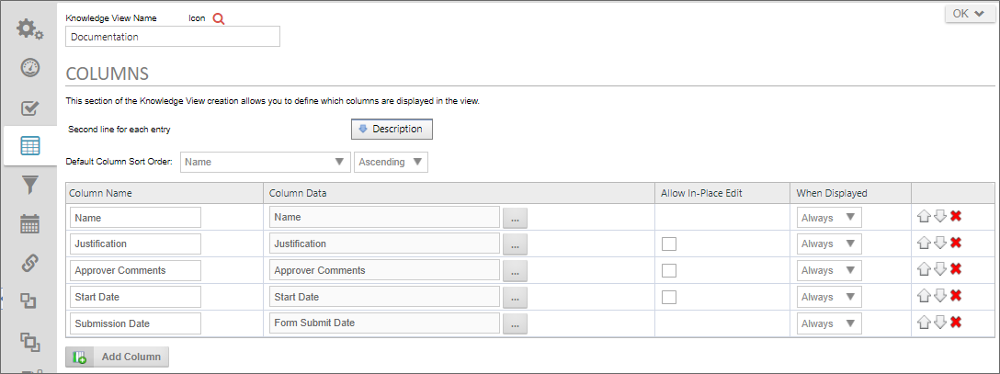
Second line for each entry
This defines optional data that should be used on the second line of every item returned. The default is the description of the item.
Default column sort order
This defines the default sort order of the data displayed in the list. The columns that are configured will appear in this dropdown list of possible fields to sort on. The user can override the sorting by clicking on a column.
The sort order isn't used when exporting the results to a CSV or an Excel Report.
Column Name
This is the column name that will be displayed in the Knowledge View. This is important when using the reporting options. For more information refer to the Knowledge View Exporting and Reporting topic.
Column Data
This defines the data to display. The data can be form data, process status, or other information about the item being returned. When displaying form data, a dropdown will be displayed with the list for form fields if the optional Forms Associated with Knowledge View link has been configured in the Properties tab.
Form fields that are part of an array can also be configured as a column. When this happens, a new row will be returned for every element in the array. That array field expansion will only occur if you have configured the Forms Associated with Knowledge View link to on the Properties tab.
When a column is set to display attachments, an icon for each attachment will appear in the column. The icons provide a link at which you can download or view the attachment, and mousing over them will display the name of the file or reference,

If the Knowledge View returns data from two different Form definitions, you can mix the use of the Form Field Picker and FORM system variables. Process Director will correctly parse the system variables to return the appropriate data.
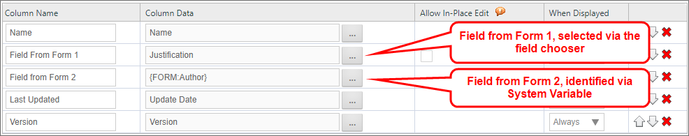
This behavior can be turned off using the fEnableMultFormFieldsInCols custom variable.
Note that, when using a Knowledge View to return process instances, and you wish to display columns returning form data from a non-default form instance, Process Director v.3.45 and above supports getting form data from the non-default form instance in the process using the system variable syntax {FORM:NonDefaultFormFieldName}. You should remember, however, that, if multiple forms are included in a Knowledge View, the Knowledge View will only return data from a single form instance in a single row. You can't have form fields from two different form instances, such a the default and the non-default Form, display as fields in a single row in the Knowledge View.
You have the option to run a process for the row by choosing Run Process from the Object Information menu item, then selecting the process you which to run for that row. When you do so, an icon for the process will appear in every row of the Knowledge View, like so:
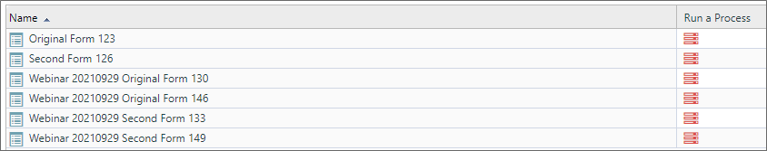
Clicking one of the icons in the Run a Process column will start the selected process, and attach the row object to the process. This is a different feature from the Run a Process selection in the Knowledge View results dropdown in the options tab, which is explained above.
Finally, for Task List KViews, you have an option to display Task Completion Icons. When this option is selected, be sure that the Allow this result to be completed from the users Task List property is selected from the Options tab of each result in the Timeline Activity's Results tab. Otherwise, the icons you've configured for the results won't appear properly.
Allow In-Place Edit
For Process Director v5.44.500 and higher, Knowledge View that return Form Instance data can be configured to allow end users to perform in-place editing of Form field data directly from the Knowledge View's grid display. Checking the Allow In-Place Edit check box, turns on in-place editing for the selected field. Designers can configure none, some, or all Form fields for in-place editing.
In addition to checking the checkbox for the Allow In-Place Editing property, the Options tab must be configured to ensure that the Allow These Actions on Objects section has the Properties box checked, as well as the Children box checked in the Display Action Icons for section.
When Displayed
When configuring columns in a Knowledge View, you have the ability to control whether the columns will be visible when the results are shown in the browser, whether the column is visible when exporting to CSV, when the column is visible when exporting to an Excel report, or whether the column is always visible.
This feature is also partially controlled by the Knowledge View Results property setting you configure on the Configure tab:
- When "Display the results of the Knowledge View in the browser” is chosen, the default is all columns will be displayed for all destinations.
- When “Export the results to a Microsoft Excel report” is chosen, the default operation is to display the first column only to the web browser, and to display all columns in the Excel report.
- When “Export the results to a CSV file” is chosen, the default operation is to display the first column only to the web browser, and to display all columns in the CSV export.
You can change this by selecting from the When Displayed dropdown. The following options are available in the dropdown:
- Never: This column will never display.
- Always: This column is always visible.
- Desktop: This column will only visible in a desktop browser.
- Excel: This column will only be visible in the Excel Report.
- CSV: This column will only be visible in the CSV export.
- Script: This column will only be visible in script APIs.
- Report: This column will only be visible in Reports.
- Desktop: This column will only visible on a mobile device.
For example, use the column name “Process Timeline Name” and set to Always display the “Process Timeline Name” column. Use the column name “Start Date” and set to Excel to only display the “Start Date” column in the Excel report.
For Process Director v5.1 and higher, Knowledge Views will not evaluate columns that are configured to display in a different output format than the current display, in order to reduce resource usage. For instance, columns that are only displayed in an export won't be evaluated when the Knowledge View is displayed in the desktop browser. For legacy applications that use Knowledge View Scripts, upgrading to this or later versions will affect those scripts. To accommodate this behavior, you'll need to add a column with the type "Script" that will always be evaluated and sent to a script regardless of the destination output.
Filter Tab #
The Filter tab identifies filter criteria that enables you to restrict the records the Knowledge View returns to those that meet specific filter criteria. The primary use for the Filter tab is to create searches for specific data that may be contained in a large set of records. The filter criteria can include form field data, categories, attribute values, or various object properties (e.g. author, document type, published). The filter criteria can identify what document versions to display – the latest document version or only the published version.
The end user can optionally be given the ability to override any of the filter values. This allows the field name and the input box to be displayed on the running Knowledge View so the user can input the additional filter information.
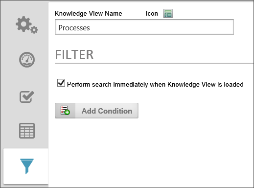
Perform search immediately when Knowledge View is loaded
This indicates that the Knowledge View search should occur immediately when it is run (opened). If this check box isn't turned on, the Knowledge View will display with an empty list until the Search button is pressed to run the search.
Filter Conditions
The Filter Conditions identify what items are available to this Knowledge View according to their properties. Only items with matching conditional property values will be available to this Knowledge View.
Refer to the Condition Builder section of this guide to create your Knowledge View filter conditions.
Prompt user for value?
This checkbox can be set for any of the filter criteria. This allows the user to override the filter value to locate objects. For each filter field that has this box checked, an input field will be displayed on the top portion of the user Knowledge View, when the user can use to filter the data the Knowledge View returns.
If you are creating filter criteria based on the result of a dropdown or radio button list, you can limit the values used to filter the search to the values available in the dropdown. This way, neither you nor a user can enter a filter value that isn't on the dropdown. This requires that the dropdown be linked with a Dropdown Object.
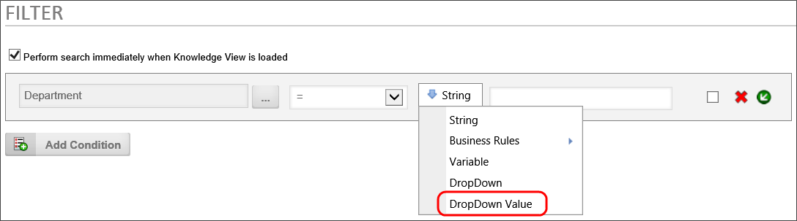
Complex Filter Considerations
In general, when creating filters, you should bear in mind the type of object the Knowledge View returns. For instance, if the Knowledge View returns Form instances, filters work best when filtering on Form data. Conversely, trying to filter Form instances based on data stored in other objects, like Process Timelines, may return unexpected results. For instance, if a Form is used in more than one Process Timeline, and you try to filter the Form instances based on Timeline data, Process Director will evaluate whether the any Timeline associated with the Form meets the filter criterion you've designated. In that case, the Knowledge View may return multiple rows that contain the same Form instance, because more than one process meets the criteria.
For a Form associated with multiple processes, when the Form is returned by a Knowledge View, additional logic runs in the background of the Knowledge View to associate the Form with the process that started first, in addition to any running processes. This logic, when considering what to return in the Knowledge View, makes the following decisions about which Form to return in the Knowledge View:
- If the form is affiliated with a single running process, always use that process.
- If the form is affiliated with more than one running processes, use the oldest.
- If the form is affiliated with no running processes, but is affiliated with completed processes, use the oldest.
This decision tree ensures that, when returning the possible Form Instances, Forms that are associated with a running process are always displayed.
Filtering applied to array fields is complex as well. When Process Director returns values from an array, it returns all of the values in each column as a comma-separated list. If you apply a filter to an array field, and any value in the array column matches the filter, then the Knowledge View will count the filter condition as being met. The filter doesn't parse every row in the array, and make an individual "match' decision for each row.
Moreover, when you return Form instances that are filtered on an array, Process Director will return a Form Instance for each row in the array. In other words, if your Knowledge View returns Form instances, and a Form has three rows in the array you're attempting to filter, then three copies of the Form instance will be returned. As a result, filtering on an array often requires custom Knowledge View scripting to parse the array and filter each row individually. Additionally, users of the Advanced Reporting Component could use that component to perform the filtering, and present the filtered results in a Report, instead of using a Knowledge View.
A more comprehensive look at array conditions is presented in the Using Arrays in Conditions section of the Condition Builder topic.
Calendar Tab #
The Calendar Tab enables users to view date-based Knowledge View results in a calendar interface. This is useful for viewing the duration of an Activity or Process Timeline, for example.
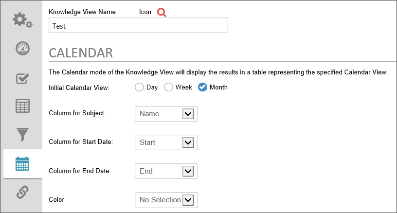
In order for the Calendar view to work properly you need to supply the Calendar interface with Knowledge View columns that supply the name you'd like to display in the calendar entry, the start date, and the end date for the calendar item. The following properties are configurable.
Initial Calendar View
This setting determines whether you'd like to initially display the Knowledge View results calendar in a daily, weekly, or monthly view. Please note that, while this does control the initial display of the calendar, users can select a different view after the calendar is displayed.
Column for Subject
The Knowledge View column to display as the subject of the calendar entry.
Column for Start Date
The Knowledge View column containing the start date for the calendar entry.
Column for End Date
The Knowledge View column containing the end date for the calendar entry. The calendar entry will span the appropriate dates between the start date and end date.
Color
A Knowledge View column that displays the color to use to display the calendar entry. You can manually set the color value for the column, or use a Business Rule or system variable to determine this column's value. Whichever method you use to supply the column's value, the color value must be either a hexadecimal HTML color, e.g., "#FF0000", or a named HTML color, e.g., "AliceBlue".
Once the values have been supplied, the Calendar view will appear similar to the example below.
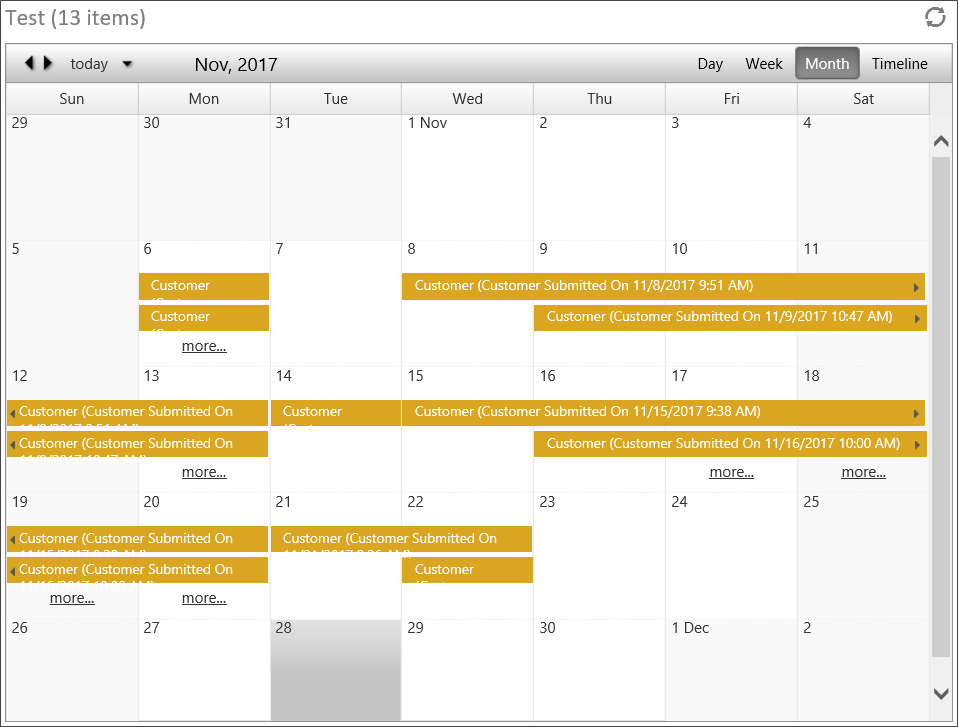
Documentation Example #
The software simulation example below demonstrates how to create a generic Knowledge View to perform a search for Content List objects.
Use the Simulator
Create a generic search Knowledge View
More Information
Continue to the Knowledge View Exporting and Reporting topic for more information.